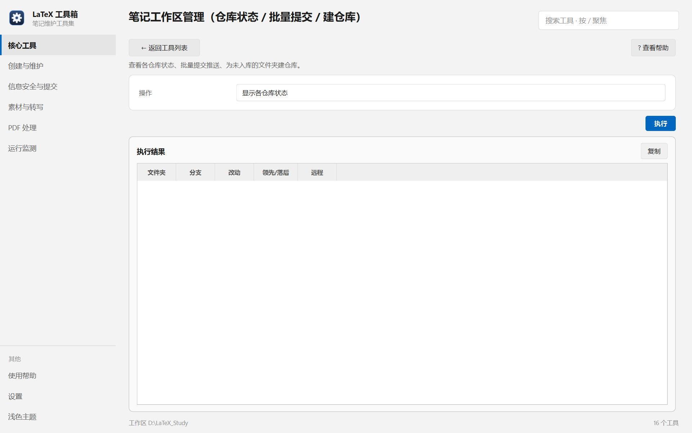

帮助目录 · 核心工具
一眼看完所有笔记仓库的状态，批量提交推送，或把还没入库的文件夹建成仓库。
| 面板入口 | 核心工具 → 卡片「笔记工作区管理」→ 选操作 → 执行 |
|---|---|
| 命令行 | python tools/manager/manager.py |

「显示各仓库状态」出的是五行表格：文件夹 / 分支 / 改动 / 领先落后 / 远程。
git init，想一次性建好仓库与远程。| 项 | 说明 |
|---|---|
| 操作 | 五种：看状态、批量提交并推送、只推送、建仓库、设根目录。 |
| 提交说明 | 写进 commit message；留空时用默认文案。 |
| 要建仓库的编号 | 表格里的序号，逗号分隔；留空表示全部。 |
| 远程账户名 | GitHub 用户名，用来拼 git@github.com:用户名/仓库名.git。 |
| 笔记根目录 | 只在「设置笔记根目录」时出现；改完会写进 manager.conf。 |
python tools/manager/manager.py --status python tools/manager/manager.py --commit-all --msg "本轮修改" python tools/manager/manager.py --commit-all --push-only python tools/manager/manager.py --create-repo --selection 3,5 --account 你的GitHub名
| 内容 | 位置 |
|---|---|
| 笔记根目录、远程账户 | manager.conf（便携：tools/manager/） |
| 仓库状态 | 实时从 git 读，不落盘 |
Q：表格里「领先 3 / 落后 0」是什么意思？
A：本地比远程多 3 个提交，远程没有新东西。落后大于 0 时说明别处推过东西，先拉再推，否则会被拒。
Q：「同步正常」但工作区是干净的，为什么还要「只推送」？
A：工作区干净不代表提交都推上去了。这条专门补推本地已有的提交。
Q：远程显示 ? 是怎么回事？
A：没配 remote，或者 git fetch 拿不到对比数据。先确认远程地址存在且能连通。
Q：建仓库时报「用户或仓库名不合法」
A：GitHub 仓库名只允许字母数字与 -_.，且不能以点开头。中文目录名要先改名。
Q：commit 被钩子拦下了
A：那是提交前的本机信息扫描（工具 10）。按提示改掉命中的路径或密钥；确属误报可单次用 git commit --no-verify。